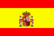
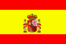

Formal Power Series and Algebraic
Combinatorics,
Polytechnical University of Catalonia,
June 7-11, 1999.
 

 List of Papers
List of Papers
Organizing Committee:
Josep M. Brunat (UPC, Barcelona) Maylis Delest (U. de Bordeaux, France) Pilar Esqué (UPC, Barcelona) Ferran Hurtado (UPC, Barcelona) Conrado Martínez (UPC, Barcelona) Montserrat Maureso (UPC, Barcelona) Antonio Montes (UPC, Barcelona) Mercè Mora (UPC, Barcelona) Marc Noy (UPC, Barcelona; Chairman) José Luis Ruiz (UPC, Barcelona) Carlos Seara (UPC, Barcelona) Oriol Serra (UPC, Barcelona)Program Committee:
Gert Almkvist (Sweden)
Helene Barcelo (USA)
François Bergeron (Canada)
Robert Cori (France; Chairman)
Jean-Marc Fédou (France)
Kazuhizo Koike (Japan)
Conrado Martínez (Spain)
Alexander Mikhalev (Russia)
Marc Noy (Spain)
Peter Paule (Austria)
Renzo Pinzani (Italy)
Oriol Serra (Spain; Chairman)
Rodica Simion (USA)
Dennis Stanton (USA)
Sheila Sundaram (USA)
Jean-Yves Thibon (France)
Volkmar Welker (Germany)
Nick Wormald (Australia)
Jiang Zeng (France)
Invited Speakers:
George Andrews (USA)
Miquel Angel Fiol (Spain)
Claire Kenyon (France)
Victor Neuman-Lara (Mexico)
Cheryl Praeger (Australia)
Arun Ram (USA)
Dominic Welsh (United Kingdom)
Jean-Bernard Zuber (France)